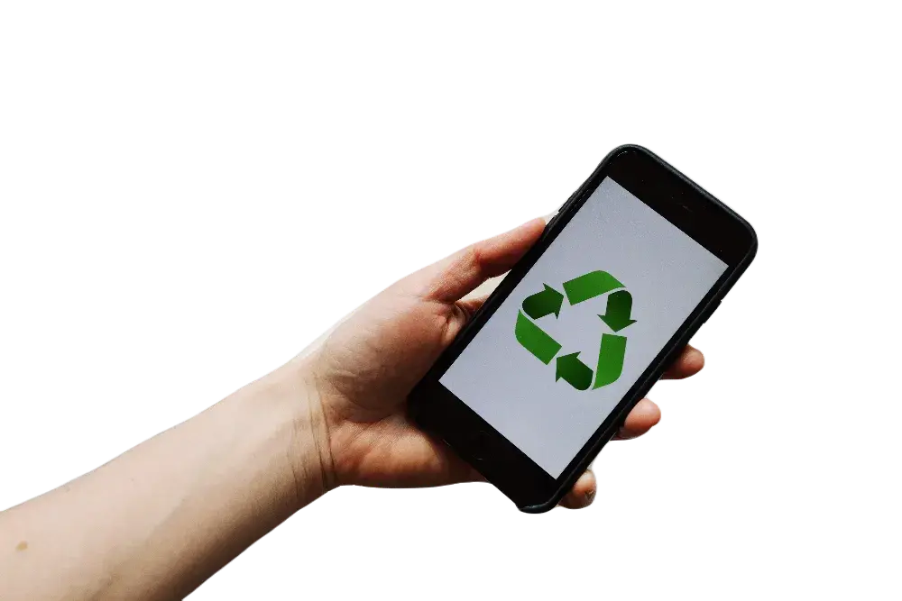

Industria 4.0
Nos dedicamos a la inteligencia de negocios
Entendemos la inteligencia de negocios (BI) como el conjunto de procesos que genera, identifica, manipula, analiza, modela algoritmos y/o visualiza miles o millones de datos, con el objetivo de identificar tendencias de negocios que le conviene desarrollar a una empresa en el corto, mediano y largo plazo. Este tipo de procesos permite conocer mejor al mercado y los propios clientes, hacer predicciones comerciales, lograr un mayor nivel de eficiencia organizacional (RRHH, logística, administración, finanzas, etc) y planificar estratégicamente los procesos de comunicación, e-commerce y marketing más allá de toda barrera geográfica.
Ingeniería de datos
Gestionamos, transformamos y asesoramos en materia de almacenamiento de datos para su posterior análisis
Machine learning
Diseñamos, entrenamos y mantenemos modelos (no-)supervisados de ML para mejorar procesos empresariales
Análisis de datos
Realizamos análisis exploratorios EDA para encontrar patrones de datos que potencien los negocios de las organizaciones
Tablero de monitoreo
Diseñamos y mantenemos tableros de monitoreo actualizados mediante APIs en tiempo real para un mejor control
Comités éticos (IA)
Promovemos comités éticos inter-disciplinarios que analicen los avances de la IA en las empresas
Arquitectura de datos
Asesoramos y diseñamos el tipo de arquitectura que las organizaciones necesitan para almacenar sus datos
Capacitaciones integrales
Llevamos adelante todo tipo de capacitaciones en todo lo relacionado con el mundo de la IA
Estudios de mercado global
Investigamos las mejores opciones de inversión en el mercado local y global para superar toda frontera
Logística para imp/exp
Asesoramos en materia de eficiencia de procesos lógisticos y de exportación / importación de productos
Productos inteligentes
Acompañamos procesos de diseño, manufactura, venta y reciclado de productos que involucren a los clientes
Desarrollo organizacional
Describe el proceso de transformación de una empresa en la búsqueda de una mayor eficacia en el diseño, ejecución, monitoreo y evaluación de sus estrategias, estructuras y procesos. La era de la Industria 4.0 demanda que las organizaciones adapten sus procesos a las demandas del tiempo presente, tales como la eficiencia, inter-conectividad, retro-alimentación (feedback), capacitación, i+d, sostenibilidad y monitoreo, entre otros.
Plan estratégico
Diseñamos estrategias para que las empresas logren sus objetivos generales en conformidad con su visión y valores
Business intelligence
Programamos y analizamos diversas herramientas BI para que las organizaciones tengan un saber más acabado de sí
Políticas de género
Promovemos iniciativas que favorecen la adquición de políticas de género de parte de los empleados y clientes
Planes de carrera
Generamos planes de carrera que generan un dinamismo interno en las empresas mediante la educación y el mérito
Seguridad e higiene
Asesoramos en materia de certificaciones en seguridad e higiene para estar al día con las últimas normativas
Accesibilidad
Queremos que las empresas sean lugares para todas las personas mediante planes de accesibilidad y capacitación
Innovación y desarrollo
Promovemos la creación de equipos de I+D para que siempre haya alguien pensando cómo mejorar y llevarlo a cabo
Informes institucionales
Realizamos informes sobre las distintas áreas de una empresa para que su gerencia las conozca al detalle
Comunicación estratégica
Comprendemos que toda empresa que quiere expandirse necesita una estrategia comunicacional efectiva que le permita cumplir con su misión y valores. Para lograrlo, proponemos convertir mediante el business hacking y la IA las relaciones con las organizaciones del propio entorno cultural, social, económico y político a fin de favorecer el crecimiento sostenible de la organización más allá de toda frontera.
Posicionamientos
Diseñamos y sistematizamos tácticas, piezas de contenido, e indicadores para trnasmitir una imagen y mensaje al exterior
Redes sociales
Utilizamos las redes sociales para que las empresas conecten con su audiencia mediante planes de acción integrales.
Desarrollo web
Creamos sitios web teniendo en cuenta la experiencia y la interfaz de los usuario (UX/UI) y las posicionamos (SEO)
Branding
Generamos una estrategia de mercado que construya una identidad corporativa fácilmente identificable por el público elegido
Relaciones con medios
Asesoramos en materia de trabajo con líderes de opinión para favorecer el direccionamiento de lo que se quiere comunicar
Media training
Convertimos a los ejecutivos de las empresas en portavoces influencers mediante un entrenamiento intensivo e interdisciplinar
Publicidad digital
Ideamos y ejecutamos campañas de promoción, awareness y posicionamiento de productos y servicios para expandir el mercado
Influencer marketing
Ayudamos a seleccionar los influencers adecuados que se ajusten a la identidad, visión y misión de la organización
Inbound marketing
Acompañamos a los buyer personas en cada etapa de su funnel de ventas para convertir sus necesidades en fidelidad
Experiencia de marca
Estimulamos a los consumidores para que logren capturar por sus sentidos la calidad y beneificios de productos y servicios
Manual normativo
Diseñamos manuales de procedimiento y contenido de la comunicación interna y externa de marcas para distintos mercados
Eventos 360 y activaciones
Gerenciamos todas las fases de un evento y la comunicación con los proveedores necesarios para disfrutar de la mejor manera
Un mundo + sostenible
El desarrollo de negocios sostenibles es un conjunto de procesos integrales por el cual una empresa produce valor agregado a largo plazo mediante la implementación de estrategias integrales.
No basta con crear un área de sostenibilidad y/o realizar acciones eco-friendly aisladas. Por eso, ayudamos a diseñar y ejecutar planes de desarrollo sostenible de negocios 4.0 (SBD) de alto impacto a nivel local e internacional.
Desarrollo de área
Ofrecemos los lineamientos básicos y el acompañamiento necesario para la creación de un área de RSE o sostenibilidad
Estrategia empresarial
Diseñamos una estrategia sostenible transversal a toda las áreas de una empresa con base en la inter-conectividad
Plan de capacitación
Entrenamos al personal, a los clientes y/o usuarios en la concientización de prácticas sostenibles 4.0 para un mundo mejor
Sistema de monitoreo
Diseñamos y mantenemos sistemas de monitoreo en materia de sostenibilidad en tiempo real a partir de APIs
Código de ética
Coordinamos procesos de creación de códigos de ética según los valores de las empresas y sus objetivos
Certificaciones
Asesoramos a las empresas en sus procesos de certificación como organizaciones sostenibles para vivir en un mundo más justo
Manipulación residual
Promovemos la generación de nuevas maneras de tratar los residuos provenientes de los distintos procesos empresariales
Economía circular
Generamos comunidad a fin de que la basura no tenga valor de mercado igual a cero y ya no resulte un gasto innecesario
Alianzas colaborativas
Ayudamos a las empresas a generar alianzas significativas para el desarrollo y el comercio de sus productos y/o servicios.
Impacto ambiental
Realizamos investigaciones de impacto ambiental para estimular la economía pero sin dañar la casa común en la que vivimos